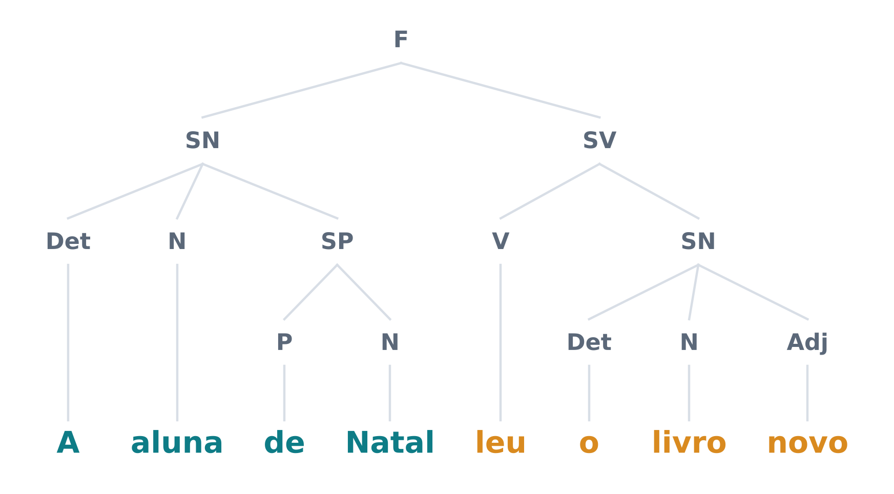
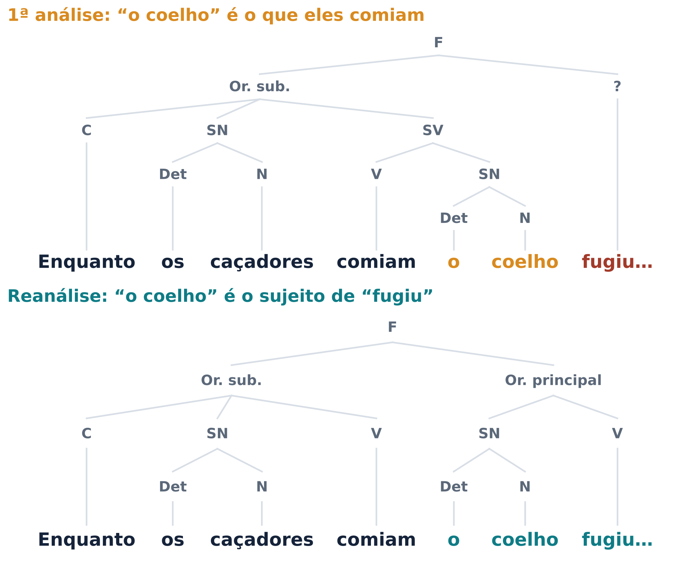
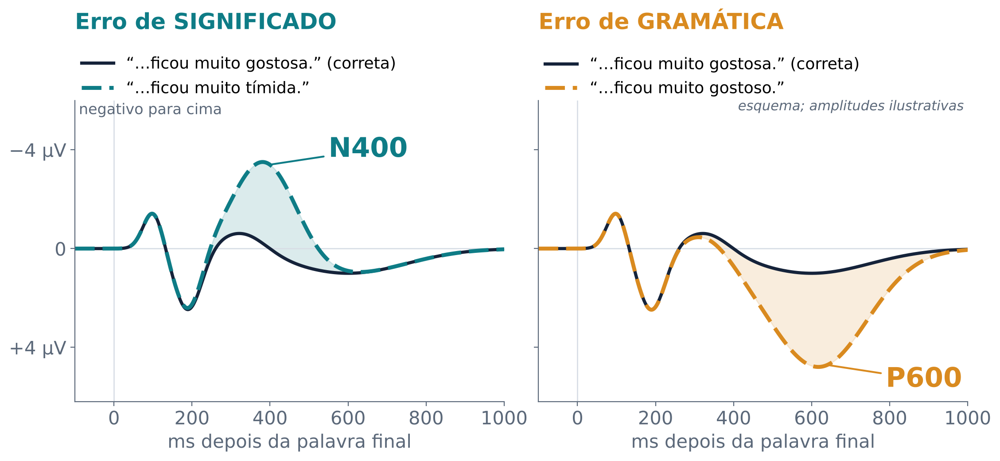
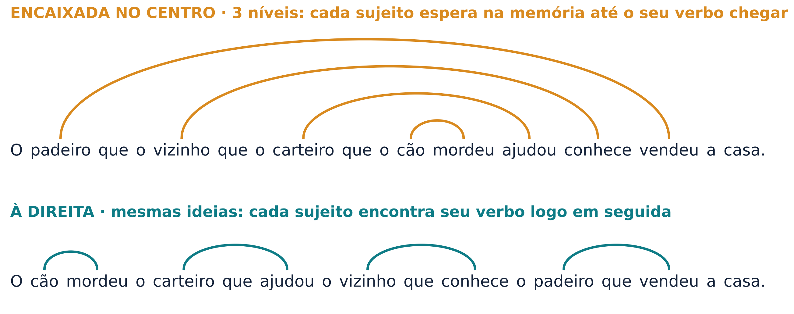
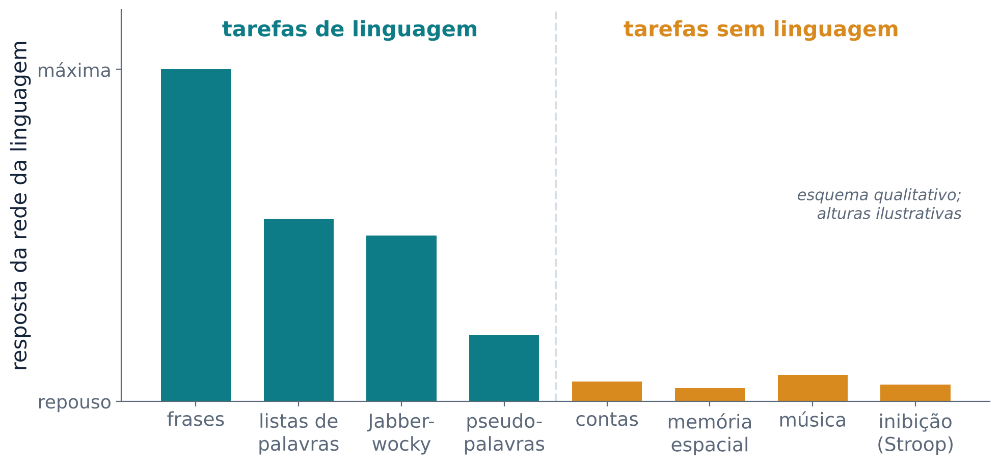
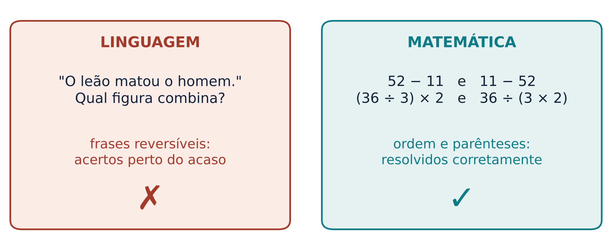

Como o cérebro transforma uma fila de palavras numa mensagem com estrutura: quem fez o quê a quem
Compare “O cachorro mordeu o carteiro” com “O carteiro mordeu o cachorro”. As palavras são as mesmas; só a ordem mudou, e a ordem diz quem fez a ação (o agente) e quem a sofreu (o paciente). Esses papéis na cena são chamados de papéis temáticos.
A sintaxe é o conjunto de regras que liga as palavras entre si e, com isso, distribui esses papéis. Na aula 5 vimos o significado de cada palavra; hoje a pergunta é como o cérebro junta as palavras numa mensagem com estrutura.
Em português, a ordem mais comum, chamada canônica, é sujeito, verbo e objeto. Frases que fogem dela, como “Foi o carteiro que o cachorro mordeu”, custam mais para processar. Esse custo aparece em línguas tão diferentes quanto chinês, alemão, finlandês e japonês (Meyer; Friederici, 2016).
Em “O menino comeu a maçã”, o mundo resolve quem fez o quê: maçãs não comem meninos. Em “O menino foi empurrado pela menina”, só a gramática diz quem empurrou. Frases assim, em que os papéis poderiam ser trocados, são chamadas de reversíveis e são o teste clássico de compreensão sintática.
Pessoas com afasia de Broca falam com frases simples, quase sem palavras gramaticais e terminações. Elas também erram com frequência justamente as frases reversíveis que não seguem a ordem canônica (Caramazza; Zurif, 1976; Rogalsky, 2016). Daí nasceu a ideia de que a área de Broca seria “o centro da sintaxe”.
Essa ideia é uma simplificação. Pessoas com afasia de Broca conseguem julgar se uma frase está gramatical mesmo quando não a entendem por completo. Além disso, nem toda pessoa com afasia de Broca tem lesão na área de Broca, e uma lesão na área de Broca não basta para causar essa afasia (Rogalsky, 2016). Voltaremos ao debate na seção 5.
Uma frase não é um colar de contas em que cada palavra só se liga à vizinha. As palavras formam grupos, os constituintes, que funcionam como unidade. Em “A aluna de Natal leu o livro novo”, o grupo “a aluna de Natal” pode ser trocado por um pronome (“Ela leu o livro novo”). Já “Natal leu” não forma grupo, embora as duas palavras estejam lado a lado. Os constituintes se encaixam uns nos outros, e o resultado é uma estrutura hierárquica, que os linguistas desenham como uma árvore (Figura 1). Identificar os constituintes e agrupá-los nessa hierarquia é uma das tarefas centrais da compreensão (Ferreira; Çokal, 2016).

Um constituinte pode conter outro do mesmo tipo: “o livro” pode virar “o livro que a aluna leu”, e assim por diante. Essa capacidade de pôr uma estrutura dentro de outra igual se chama recursão. Em princípio, ela permite frases de tamanho ilimitado.
Os constituintes não são só uma invenção dos linguistas. Christophe Pallier, Anne-Dominique Devauchelle e Stanislas Dehaene mostraram, com ressonância magnética funcional (fMRI), sequências de 12 palavras organizadas em constituintes de tamanhos diferentes. Em regiões do hemisfério esquerdo, a atividade cresceu com o tamanho dos constituintes. No giro frontal inferior e no temporal posterior, isso aconteceu mesmo quando as palavras de conteúdo foram trocadas por pseudopalavras (palavras inventadas). No polo temporal, na parte anterior do sulco temporal superior e na junção temporoparietal, o efeito só apareceu com palavras reais (Pallier; Devauchelle; Dehaene, 2011).
Em “As meninas que o professor elogiou ontem saíram cedo”, “saíram” concorda com “meninas”, seis palavras para trás, e não com “o professor”, que está no meio do caminho. Para acertar, o cérebro precisa guardar o traço “plural” e ligar as duas pontas certas da frase. Isso só funciona se ele seguir a árvore, e não a ordem linear das palavras.
Às vezes essa ligação falha. Kathryn Bock e Carol Miller pediram a falantes de inglês que completassem começos de frases e provocaram erros de atração, em que o verbo concorda com o substantivo mais próximo e não com o sujeito (Bock; Miller, 1991). Em português conhecemos bem o fenômeno: “A chave dos armários estão…”.
O canto da baleia-jubarte tem uma hierarquia simples (unidades formam frases, frases formam temas), mas é muito previsível e pode ser descrito como uma cadeia de transições, sem o encaixamento profundo da frase humana. Em experimentos com “gramáticas artificiais”, estorninhos e mandarins-diamante distinguiram sequências do tipo ABAB e AABB, mas os mandarins se apoiavam em pistas locais, como dois sons A seguidos. As conclusões sobre os animais ainda são preliminares, baseadas em poucas espécies (ten Cate; Petkov, 2019).
Algumas frases admitem duas árvores. Em “Vi o homem com o binóculo”, quem tinha o binóculo, eu ou o homem? É uma ambiguidade global: a frase inteira tem duas leituras.
Mais comum é a ambiguidade local, que dura só até certo ponto. Leia devagar: “Enquanto os caçadores comiam o coelho fugiu da toca.” Ao chegar em “o coelho”, quase todo mundo entende que os caçadores comiam o coelho. Quando aparece “fugiu”, essa leitura desmorona: “o coelho” é o sujeito de “fugiu”, e a árvore precisa ser refeita (Figura 2). Frases assim são chamadas de frases labirinto (em inglês, garden-path sentences), e o conserto é a reanálise (Ferreira; Çokal, 2016).

Caímos na armadilha porque o cérebro não espera o fim da frase. Praticamente todos os modelos atuais assumem que a interpretação é construída de forma incremental, palavra por palavra, e há evidências de que o leitor até antecipa o que vem a seguir (Ferreira; Çokal, 2016). Ganha-se rapidez; às vezes a aposta sai errada.
Como o cérebro escolhe a primeira análise? Há duas grandes respostas (Ferreira; Çokal, 2016).
Hoje muitos pesquisadores consideram que as evidências favorecem os modelos interativos, mas há quem argumente que essa conclusão vai um pouco além dos dados (Ferreira; Çokal, 2016). Há consenso de que a prosódia, a melodia e as pausas da fala, influencia a análise desde as primeiras etapas (Ferreira; Çokal, 2016). Na escrita, a vírgula faz um papel parecido: “Enquanto os caçadores comiam, o coelho fugiu” não tem labirinto nenhum.
Kiel Christianson e colegas deram a leitores frases como “While the woman bathed the baby played in the crib” (“Enquanto a mulher banhava o bebê brincava no berço”) e depois perguntaram: “A mulher banhou o bebê?”. A maioria respondeu “sim”, embora a frase diga que a mulher se banhava (Christianson et al., 2001; Ferreira; Çokal, 2016). A reanálise conserta a árvore, mas nem sempre apaga a primeira interpretação. Modelos de processamento “bom o suficiente” (good enough) propõem que às vezes nos contentamos com uma interpretação aproximada (Ferreira; Çokal, 2016).
Ler e ouvir são apostas contínuas: o cérebro escolhe uma árvore antes de ter toda a informação. Na maioria das frases reais, vírgulas, pausas e contexto evitam o labirinto; os experimentos criam de propósito o pior caso.
O potencial relacionado a evento (ERP, aula 2) é a média do eletroencefalograma (EEG) logo depois de um estímulo, como uma palavra. Ele mostra quando o cérebro reage, com precisão de milissegundos.
Marta Kutas e Steven Hillyard apresentaram frases palavra por palavra. Quando a última palavra não fazia sentido, como em “He spread the warm bread with socks” (“Ele passou meias no pão quente”), apareceu uma onda negativa tardia, o N400. Quando a última palavra fazia sentido mas vinha em letras maiores, a resposta foi outra, uma série de ondas positivas tardias (Kutas; Hillyard, 1980). O N400 não é, portanto, uma reação a qualquer coisa estranha: ele está ligado ao significado. Em adultos jovens, ele começa pouco depois de 200 ms e tem latência muito estável (Bornkessel-Schlesewsky; Staub; Schlesewsky, 2016).
Lee Osterhout e Phillip Holcomb registraram o EEG durante a leitura de frases com anomalias e ambiguidades sintáticas. As palavras que não cabiam na estrutura esperada, como o ponto de virada de uma frase labirinto, produziram uma onda positiva tardia, o P600 (Osterhout; Holcomb, 1992). O P600 e uma negatividade anterior esquerda (LAN) passaram a ser tratados como marcas de processamento morfossintático, isto é, das terminações e da concordância (Bornkessel-Schlesewsky; Staub; Schlesewsky, 2016).

Em inglês, “The beavers sometimes melt…” (“Os castores às vezes derretem…”, erro de significado) produz N400, e “…sometimes chewing…” (forma verbal errada) produz P600, registrados no mesmo eletrodo (van Berkum; Nieuwland, 2019). Formas e distribuições diferentes no couro cabeludo sugerem geradores diferentes no cérebro, embora o EEG de superfície não diga com precisão onde eles estão.
O tempo das ondas foi usado para defender ideias opostas. Para Angela Friederici, há etapas em série: primeiro a estrutura local (uma negatividade anterior esquerda precoce, a ELAN, entre 150 e 250 ms), depois significado e morfossintaxe em paralelo (N400 e LAN) e por fim integração e reanálise (P600). Para Peter Hagoort, todas as fontes de informação interagem assim que estão disponíveis. O debate entre modelos modulares e interativos continua aberto (Bornkessel-Schlesewsky; Staub; Schlesewsky, 2016).
A ideia de “uma onda, um domínio” também foi abalada. Frases gramaticais com papéis temáticos invertidos, como “The hearty meals were devouring…” (“As fartas refeições estavam devorando…”), produzem P600, e não N400, embora o problema seja de significado (Kim; Osterhout, 2005; Bornkessel-Schlesewsky; Staub; Schlesewsky, 2016). Erros de ortografia também podem produzir P600 (Bornkessel-Schlesewsky; Staub; Schlesewsky, 2016). Uma interpretação que vem ganhando força é que o P600 reflete a necessidade de revisar a análise estrutural, e não a sintaxe em si (Ferreira; Çokal, 2016).
Leia: “O rato que o gato que o cachorro perseguiu pegou fugiu.” A frase é gramatical: cada “que” abre uma oração dentro da outra, e os três verbos do fim fecham as três. Mesmo assim, quase ninguém a entende de primeira. Já “O menino chamou o cachorro que mordeu o carteiro que trouxe a carta” é fácil. A diferença está em onde as orações se encaixam (Figura 4).

Estruturas encaixadas no centro são mais difíceis que as encaixadas à direita, em línguas tão diferentes quanto inglês e japonês (Ferreira; Çokal, 2016). A diferença é explicada pela memória de trabalho, o “rascunho” mental em que guardamos informação por alguns segundos. A teoria de Edward Gibson identifica dois custos: armazenar elementos incompletos (um sujeito que ainda espera o seu verbo) e integrar uma palavra a outra que ficou para trás, custo que cresce com a distância entre elas (Gibson, 1998; Ferreira; Çokal, 2016). Na frase do rato, três sujeitos ficam abertos antes de qualquer verbo aparecer. Quando um dos três verbos de uma frase assim é retirado, os participantes muitas vezes nem percebem a falta (Meyer; Friederici, 2016). A gramática permite encaixar sem limite; a memória, não.
Numa meta-análise de estudos de neuroimagem que compararam frases não canônicas ou encaixadas com versões simples, duas regiões apareceram: a área 44 de Brodmann (BA 44), no giro frontal inferior esquerdo, parte da área de Broca, e, de modo menos consistente entre estudos, a parte posterior dos giros temporais médio e superior esquerdos (Meyer; Friederici, 2016). Os autores propõem que a BA 44 estabelece as dependências hierárquicas entre sujeitos, objetos e verbos.
Aqui a área discorda. Corianne Rogalsky e Gregory Hickok argumentam que parte desse efeito vem da carga de memória de trabalho, porque nas frases não canônicas o objeto fica mais longe do seu verbo (Meyer; Friederici, 2016). Nessa visão, a área de Broca é recrutada sobretudo em situações difíceis, de alta carga (Rogalsky, 2016). Meyer e Friederici respondem com estudos em alemão, hebraico e japonês que mantiveram constante a distância entre o sujeito ou o objeto e o verbo e, mesmo assim, encontraram ativação da BA 44. Hagoort atribui ao giro frontal inferior um papel ainda mais geral, de juntar peças em vários níveis, inclusive dentro das palavras (Hagoort, 2016).
A compreensão de frases não depende de um único “centro”, e sim de redes de regiões frontais e temporais ligadas por feixes de substância branca (Friederici, 2016).
No modelo de Angela Friederici, quatro vias ligam o córtex frontal ao temporal (Friederici, 2016):
O desenvolvimento apoia essa divisão. Recém-nascidos só têm a via D1. A D2 amadurece tarde, e o grau de mielinização dela acompanha o desempenho das crianças em frases não canônicas (Friederici, 2016).
Peter Hagoort divide o trabalho em três componentes: Memória, Unificação e Controle (MUC). A memória, no córtex temporal e no giro angular, guarda o conhecimento sobre as palavras, inclusive a “pecinha de árvore” que cada uma traz. A unificação, no giro frontal inferior esquerdo, junta essas peças em estruturas maiores, com uma distribuição aproximada: a unificação semântica recruta mais as áreas 47 e 45; a sintática, as áreas 45 e 44; a fonológica, a 44 e a parte ventral da área 6. O controle, no pré-frontal dorsolateral e no cingulado anterior, escolhe a língua certa e organiza os turnos na conversa (Hagoort, 2016).
Para Hagoort, a unificação não é exclusiva da sintaxe. O giro frontal inferior integra informações de várias fontes: uma palavra ou um gesto incongruentes com a frase aumentam a atividade na mesma região (Hagoort, 2016). Ele lembra também que, em humanos, o fascículo arqueado tem uma projeção proeminente para o lobo temporal, muito menor ou ausente em chimpanzés e macacos (Hagoort, 2016). Isso não quer dizer que o feixe “seja” a sintaxe.
O lobo temporal anterior (LTA) responde mais a frases do que a listas de palavras, lidas ou ouvidas, inclusive a frases com pseudopalavras. Mas também é sensível ao significado: anomalias semânticas modulam sua atividade (Rogalsky, 2016). É a região que, na aula 5, vimos funcionar como “hub” de conceitos.
O teste mais simples de composição é juntar duas palavras. Com magnetoencefalografia (MEG), Douglas Bemis e Liina Pylkkänen compararam expressões mínimas, como “red boat” (“barco vermelho”), com controles sem composição. A composição ativou o LTA esquerdo e, logo depois, o córtex pré-frontal ventromedial (Bemis; Pylkkänen, 2011).
Se o LTA faz análise sintática ou combina significados ainda é debatido. Pessoas com demência semântica, cuja atrofia começa no polo temporal, em geral não mostram dificuldades sintáticas depois de descontada a perda de vocabulário, mas um estudo mais recente complicou esse quadro. O LTA é uma parte, e não “a sede”, de uma rede frontotemporoparietal maior (Rogalsky, 2016).
A rede que organiza hierarquias em frases também organiza contas ou música? Evelina Fedorenko, Michael Behr e Nancy Kanwisher primeiro localizaram as regiões da linguagem em cada participante, com fMRI, e depois mediram a resposta dessas mesmas regiões a aritmética, memória de trabalho, controle cognitivo e música. A resposta foi pequena ou nula (Fedorenko; Behr; Kanwisher, 2011) (Figura 5).

A música ainda é debatida. Estudos de comportamento sugerem que estrutura musical e linguística compartilham recursos, mas o LTA, que responde a frases, não respondeu a melodias quando as duas foram comparadas diretamente (Rogalsky, 2016).
As lesões contam a mesma história. Rosemary Varley e colegas estudaram três homens com lesões grandes na região perissilviana esquerda, incapazes de entender ou produzir frases gramaticalmente corretas. Ainda assim, faziam cálculos e resolviam problemas com estrutura encaixada, como expressões com parênteses (Varley et al., 2005; Mildner, 2008) (Figura 6). A estrutura hierárquica da matemática sobreviveu à perda da sintaxe linguística.

Uma revisão de estudos de imagem e de pacientes resume a conclusão no título: linguagem e pensamento não são a mesma coisa (Fedorenko; Varley, 2016). Duas ressalvas. Esses pacientes eram adultos que tiveram linguagem a vida toda; os dados não dizem se uma criança chegaria aos mesmos pensamentos sem nenhuma língua. E a estrutura hierárquica não é exclusiva da linguagem, pois aparece também na matemática. Específica parece ser a rede que a usa para montar frases.
A rede frontotemporal esquerda que responde a frases quase não responde a contas e música, e pessoas que perderam a gramática ainda fazem contas com parênteses. A linguagem é uma ferramenta poderosa para comunicar pensamentos, mas, no adulto, o pensamento não “roda” dentro dela.
Os quatro experimentos do Laboratório de Frases recriam, em pequena escala, achados desta aula. Com poucas tentativas por pessoa, o que importa é o padrão da turma.
Experimento 1: frases labirinto. Você leu, palavra por palavra, frases labirinto e as mesmas frases com vírgula depois do verbo. O esperado é um tempo maior em “fugiu” e na palavra seguinte, só na versão sem vírgula: é o custo da reanálise, o mesmo ponto que no EEG produz um P600 (Osterhout; Holcomb, 1992). Muita gente também responde “sim” à pergunta “Os caçadores comeram o coelho?”, sinal de que a primeira interpretação não some (Christianson et al., 2001). Quem lê muito rápido ou percebe o truque da vírgula pode ter custo perto de zero.
Experimento 2: certa ou errada? Erros de concordância (“A sopa da vovó ficou muito gostoso”) e de significado (“…ficou muito tímida”) costumam ser detectados em tempos parecidos. O tempo do dedo mede a decisão e o movimento, não o processo; é o EEG que mostra que os processos diferem (seção 4).
Experimento 3: frases encaixadas. A frase do rato costuma levar muito mais tempo, e muita gente erra “Quem pegou o rato?” (o gato); a versão à direita é rápida. É o custo de manter várias dependências abertas na memória (Gibson, 1998).
Experimento 4: Jabberwocky. O nome vem de um poema de Lewis Carroll com palavras inventadas. Em “O gupo fulou a trima”, quase todos acham o verbo e quem fez a ação só com pistas gramaticais: ordem, artigos, terminações e concordância. Passiva e relativa costumam ser mais lentas; relativas de objeto (“O tarfo que a mitra brelou sumou”) custam mais que as de sujeito (Ferreira; Çokal, 2016). No estudo de Pallier, o giro frontal inferior e o temporal posterior também acompanharam a estrutura de frases assim (Pallier; Devauchelle; Dehaene, 2011).
Por que frases reversíveis são um bom teste de compreensão sintática, e por que o desempenho de pessoas com afasia de Broca nessas frases não prova que a área de Broca é “o centro da sintaxe”?
Resposta
Nas frases reversíveis o conhecimento do mundo não ajuda, e só a estrutura diz quem fez o quê. Pessoas com afasia de Broca erram essas frases, mas conseguem julgar a gramaticalidade de frases que não entendem, e a síndrome nem sempre coincide com lesão na área de Broca. A relação entre região e função é mais complexa.
Explique, com o exemplo do coelho, a diferença entre o modelo de duas etapas e os modelos baseados em restrições.
Resposta
No modelo de duas etapas, o sistema liga “o coelho” a “comiam” porque é a estrutura mais econômica, usando só sintaxe, e corrige depois. Nos modelos de restrições, várias análises competem desde o início, e a leitura errada ganha porque “comer” costuma ter objeto. Os dois preveem o labirinto, mas por razões diferentes.
No experimento 2, os tempos para detectar erros de concordância e de significado foram parecidos. Isso quer dizer que o cérebro trata os dois erros da mesma forma?
Resposta
Não. O tempo de reação mede a decisão final. O EEG mostra ondas diferentes em polaridade e tempo (N400 para significado, P600 para estrutura), o que sugere processos e geradores diferentes.
Por que não é correto dizer que o P600 é “a onda da sintaxe”?
Resposta
O P600 também aparece em frases gramaticais com papéis temáticos invertidos e em outras incongruências, como erros de ortografia. Uma interpretação atual é que ele reflete a revisão da análise estrutural, e não a sintaxe em si.
A frase do rato é gramatical, mas quase incompreensível. O que isso diz sobre a diferença entre a gramática e o seu uso, e qual é o debate sobre o papel da BA 44?
Resposta
A gramática permite encaixar sem limite, mas a memória de trabalho limita quantas dependências conseguimos manter abertas. A BA 44 é ativada por frases encaixadas e não canônicas; uns defendem que ela constrói a hierarquia, outros que reflete a carga de memória de trabalho.
Use duas evidências da aula para discutir se a rede da linguagem é necessária para fazer contas.
Resposta
Regiões da linguagem localizadas em cada pessoa quase não respondem a aritmética, música ou controle cognitivo. Pacientes com grave prejuízo da gramática resolvem contas com ordem e parênteses. Os dados vêm de adultos, então não dizem como seria o desenvolvimento sem linguagem.
BEMIS, D. K.; PYLKKÄNEN, L. Simple composition: a magnetoencephalography investigation into the comprehension of minimal linguistic phrases. The Journal of Neuroscience, v. 31, n. 8, p. 2801-2814, 2011. DOI: https://doi.org/10.1523/JNEUROSCI.5003-10.2011.
BOCK, K.; MILLER, C. A. Broken agreement. Cognitive Psychology, v. 23, n. 1, p. 45-93, 1991. DOI: https://doi.org/10.1016/0010-0285(91)90003-7.
BORNKESSEL-SCHLESEWSKY, I.; STAUB, A.; SCHLESEWSKY, M. The timecourse of sentence processing in the brain. In: HICKOK, G.; SMALL, S. L. (org.). Neurobiology of language. London: Academic Press, 2016. p. 607-620. DOI: https://doi.org/10.1016/B978-0-12-407794-2.00049-3.
CARAMAZZA, A.; ZURIF, E. B. Dissociation of algorithmic and heuristic processes in language comprehension: evidence from aphasia. Brain and Language, v. 3, n. 4, p. 572-582, 1976. DOI: https://doi.org/10.1016/0093-934X(76)90048-1.
CHRISTIANSON, K. et al. Thematic roles assigned along the garden path linger. Cognitive Psychology, v. 42, n. 4, p. 368-407, 2001. DOI: https://doi.org/10.1006/cogp.2001.0752.
FEDORENKO, E.; BEHR, M. K.; KANWISHER, N. Functional specificity for high-level linguistic processing in the human brain. Proceedings of the National Academy of Sciences, v. 108, n. 39, p. 16428-16433, 2011. DOI: https://doi.org/10.1073/pnas.1112937108.
FEDORENKO, E.; VARLEY, R. Language and thought are not the same thing: evidence from neuroimaging and neurological patients. Annals of the New York Academy of Sciences, v. 1369, n. 1, p. 132-153, 2016. DOI: https://doi.org/10.1111/nyas.13046.
FERREIRA, F.; ÇOKAL, D. Sentence processing. In: HICKOK, G.; SMALL, S. L. (org.). Neurobiology of language. London: Academic Press, 2016. p. 265-274. DOI: https://doi.org/10.1016/B978-0-12-407794-2.00022-5.
FRIEDERICI, A. D. The neuroanatomical pathway model of language: syntactic and semantic networks. In: HICKOK, G.; SMALL, S. L. (org.). Neurobiology of language. London: Academic Press, 2016. p. 349-356. DOI: https://doi.org/10.1016/B978-0-12-407794-2.00029-8.
GIBSON, E. Linguistic complexity: locality of syntactic dependencies. Cognition, v. 68, n. 1, p. 1-76, 1998. DOI: https://doi.org/10.1016/S0010-0277(98)00034-1.
HAGOORT, P. MUC (Memory, Unification, Control): a model on the neurobiology of language beyond single word processing. In: HICKOK, G.; SMALL, S. L. (org.). Neurobiology of language. London: Academic Press, 2016. p. 339-347. DOI: https://doi.org/10.1016/B978-0-12-407794-2.00028-6.
KIM, A.; OSTERHOUT, L. The independence of combinatory semantic processing: evidence from event-related potentials. Journal of Memory and Language, v. 52, n. 2, p. 205-225, 2005. DOI: https://doi.org/10.1016/j.jml.2004.10.002.
KUTAS, M.; HILLYARD, S. A. Reading senseless sentences: brain potentials reflect semantic incongruity. Science, v. 207, n. 4427, p. 203-205, 1980. DOI: https://doi.org/10.1126/science.7350657.
MacDONALD, M. C.; PEARLMUTTER, N. J.; SEIDENBERG, M. S. The lexical nature of syntactic ambiguity resolution. Psychological Review, v. 101, n. 4, p. 676-703, 1994. DOI: https://doi.org/10.1037/0033-295X.101.4.676.
MEYER, L.; FRIEDERICI, A. D. Neural systems underlying the processing of complex sentences. In: HICKOK, G.; SMALL, S. L. (org.). Neurobiology of language. London: Academic Press, 2016. p. 597-606. DOI: https://doi.org/10.1016/B978-0-12-407794-2.00048-1.
MILDNER, V. The cognitive neuroscience of human communication. New York: Lawrence Erlbaum Associates, 2008.
OSTERHOUT, L.; HOLCOMB, P. J. Event-related brain potentials elicited by syntactic anomaly. Journal of Memory and Language, v. 31, n. 6, p. 785-806, 1992. DOI: https://doi.org/10.1016/0749-596X(92)90039-Z.
PALLIER, C.; DEVAUCHELLE, A.-D.; DEHAENE, S. Cortical representation of the constituent structure of sentences. Proceedings of the National Academy of Sciences, v. 108, n. 6, p. 2522-2527, 2011. DOI: https://doi.org/10.1073/pnas.1018711108.
ROGALSKY, C. The role of the anterior temporal lobe in sentence processing. In: HICKOK, G.; SMALL, S. L. (org.). Neurobiology of language. London: Academic Press, 2016. p. 587-595. DOI: https://doi.org/10.1016/B978-0-12-407794-2.00047-X.
TEN CATE, C.; PETKOV, C. I. The grammatical abilities of animals: a comparative overview. In: HAGOORT, P. (org.). Human language: from genes and brains to behavior. Cambridge, MA: MIT Press, 2019. p. 687-700.
VAN BERKUM, J. J. A.; NIEUWLAND, M. S. A cognitive neuroscience perspective on language comprehension in context. In: HAGOORT, P. (org.). Human language: from genes and brains to behavior. Cambridge, MA: MIT Press, 2019. p. 429-442.
VARLEY, R. A. et al. Agrammatic but numerate. Proceedings of the National Academy of Sciences, v. 102, n. 9, p. 3519-3524, 2005. DOI: https://doi.org/10.1073/pnas.0407470102.
Material de estudo da disciplina Bases neurais da comunicação humana (UFRN), Prof. Daniel Y. Takahashi. Texto e figuras elaborados para o curso; as fontes estão nas Referências.